张某（一名素人教师）在微博上发文：
“杨某（某明星）就是扫把星。”附上丑化杨某肖像的图片，并配文“贱婢跪下”、“老娘就是没素质”等杨某的肖像图。
明星遭遇网络暴力，这是裁判文书中的常见情形。我们试图以“网络暴力”、“语言暴力”、“网络侵权——语言”关键词进行检索，在北大法宝中共翻阅了1291篇法律文书，筛选出有效案例共293篇，以期敲开网络暴力世界的大门。
我们从293份裁判文书中整理出249份详细描述被施暴者性别、职业和行业的文书。
我们从293份裁判文书中整理出249份详细描述被施暴者性别、职业和行业的文书。可以看到，在网络暴力中描述被施暴者最醒目的词条分别是“女” 、“娱乐业”、“明星”等。
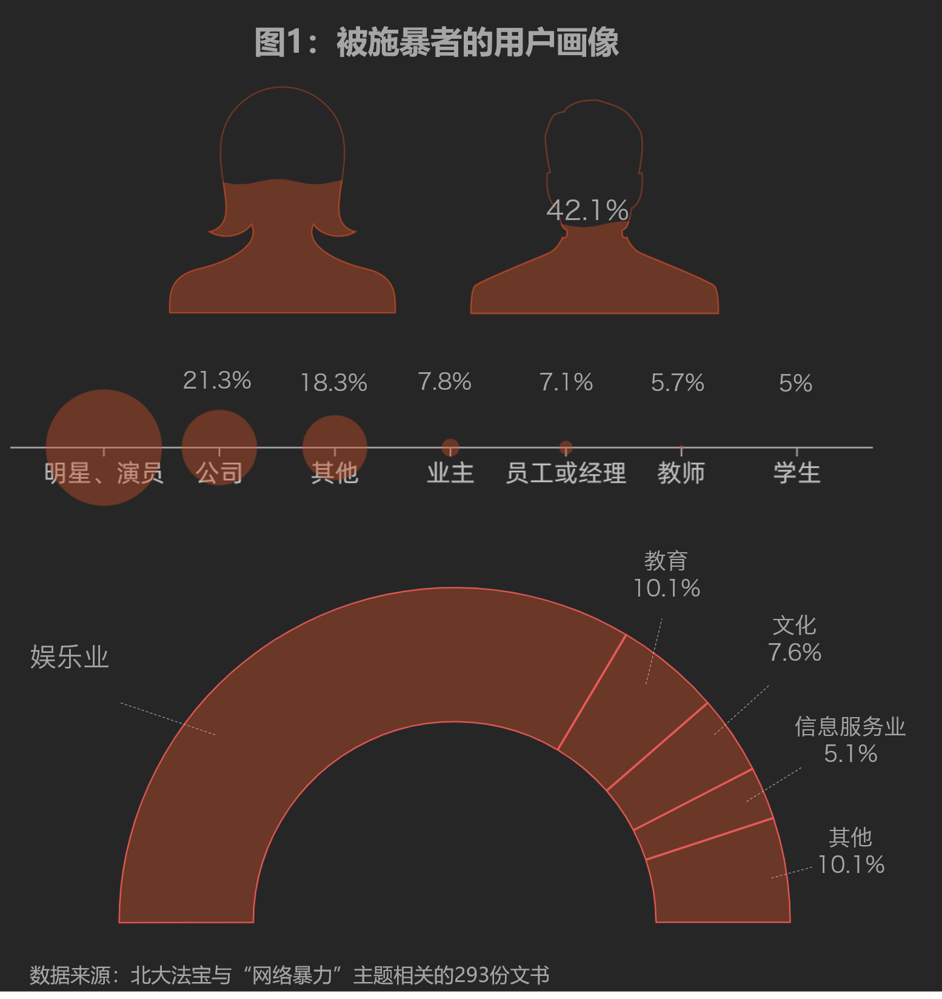
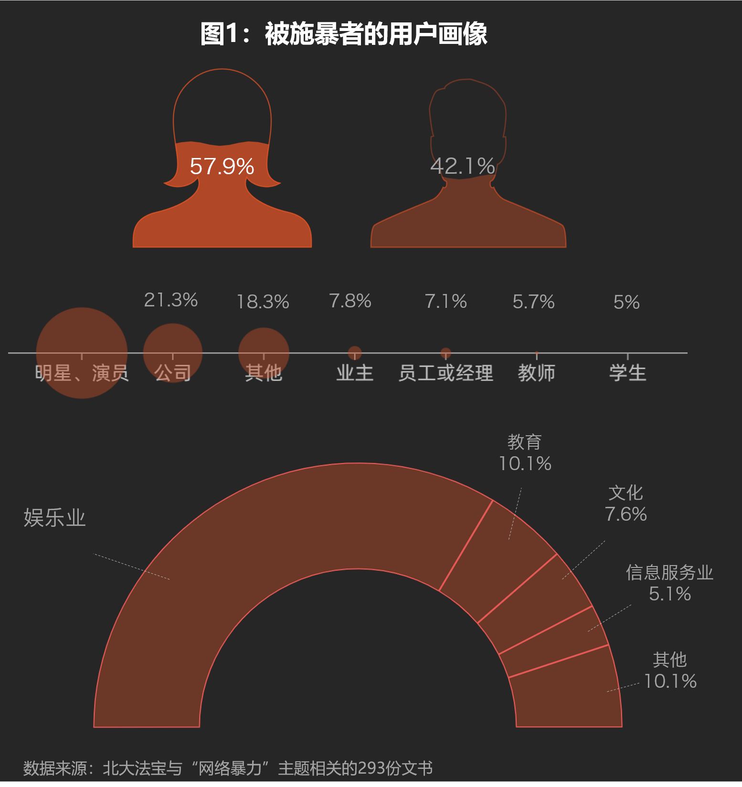
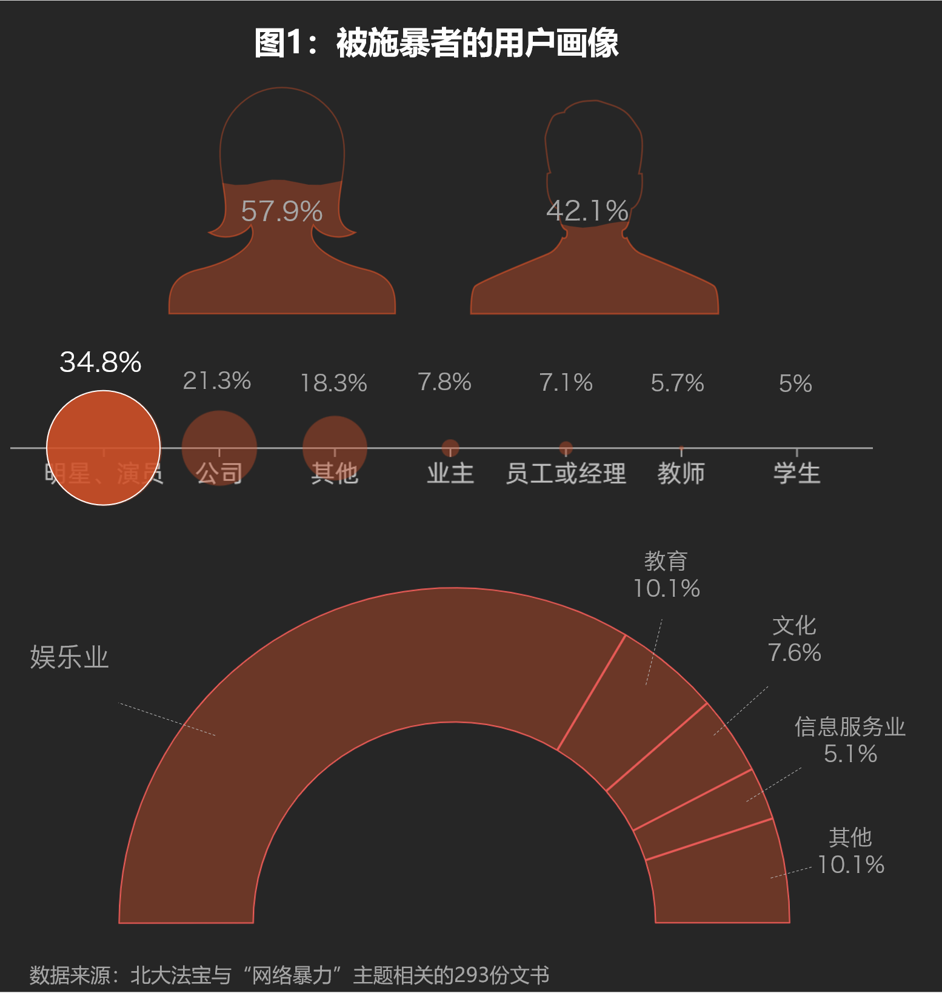
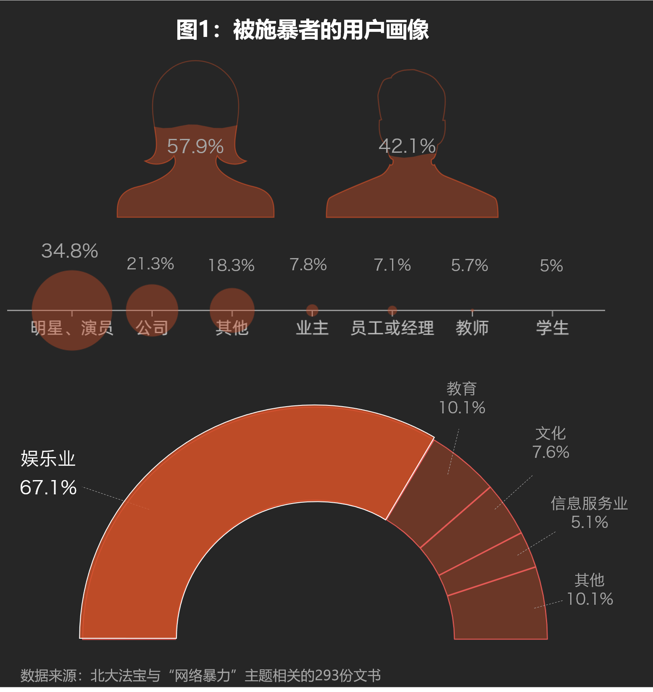
其中，在159篇有明确性别指向的文书，被施暴者有92名女性，占比57.9%。
在141篇明确指出被施暴者身份的文书中，又以明星、演员占比最大，占34.8%。
在79篇明确指出被施暴者所属行业的文书中，从事娱乐业的人员最多，占比67.1%。
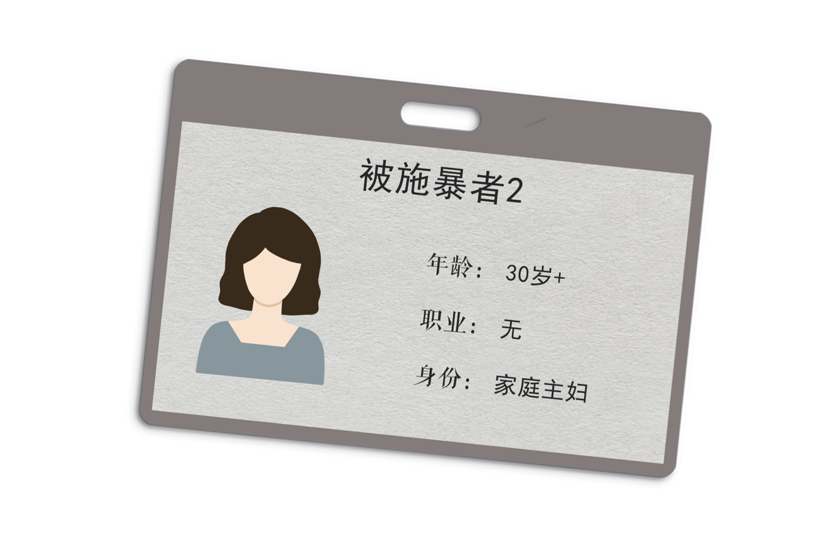
2022年4月3日，由于疫情封控Joshua无法给相距27公里的父亲送饭。她联系了外卖小哥，小哥7点多出发最后在凌晨2点多，把东西送到目的地。Joshua想要感谢外卖小哥，但是在小哥的百般拒绝下，只能为小哥充值了200元的话费。
但是她也给外卖小哥在的公司主管打了电话表示感谢。 Joshua发布了一个视频赞美外卖小哥的善举，但是无数的人在Joshua的评论区评论道：“200块，这是在打发叫花子呢？”等一系列不好的评论；甚至有人特意私信这名女子，专门去私信骂她，说她没良心，外卖小哥那么辛苦的为你父亲送餐，跑到了凌晨2点，你却打发他200元钱。
2022年4月7日，不堪重负的Joshua选择了跳楼自杀。
2002年，博客开始在中国推动。在统计的293篇文书中，在博客平台上对他人进行网络暴力主要集中在2012-2013博客的流行期。自中国大陆第一个互联网BBS上线后，论坛在2005年到2008年迎来黄金阶段，在早期的法律文书的网络暴力也多出现在论坛和网站上。2012年微博用户达到3.1亿，在经过2013-2015年其他平台（微信、论坛等）的冲击下，用户有所下降后，在2018年达到3.5亿人。
这提醒我们网络暴力发生的背后每个平台都有一定的责任。
与微信和QQ的熟人圈子不同，博客、论坛、微博是非熟人圈子，从梳理的文书上看，发生在微博上的网络暴力，施暴者与被施暴者是陌生人居多。而发生在微信群里与朋友圈的网络暴力更多的是同一小区居民或者是同事关系。
近年来，微博成为网络暴力主要发生平台有两方面的原因，一是随着社会的发展，人们进入网络社会的门槛降低，网民群体主要以青年为主。3月12日，微博发布《2020微博用户发展报告》。报告显示，微博用户群体继续呈现年轻化趋势，其中90后和00后的占比接近80%。
二是缺乏公共话语平台，网民的日常得不到发泄。《第31次互谅网络发展状况统计报告》显示，网民群体中平均月收入在1500元以下的占43.1%。处于弱势地位的群体，更容易产生各种仇视社会的心理，他们在微博社区存在，在掌握了话语权之后将对现实社会的不满情绪移植到线上。
被施暴者轻则名誉受损、社会性死亡、患上抑郁症，重则自杀。 网络暴力给人带来的伤害不容小觑。我们通过将293篇法律文书中提到网络暴力对被施暴者影响进行分析，其中对形象、心理和生活的影响提到最多。
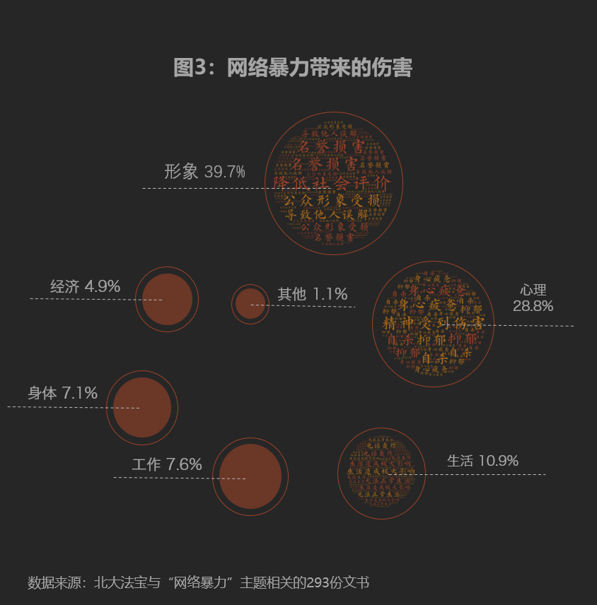
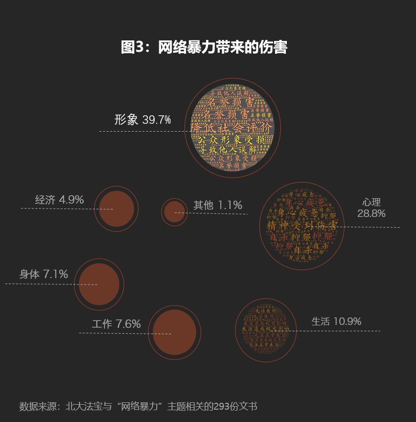
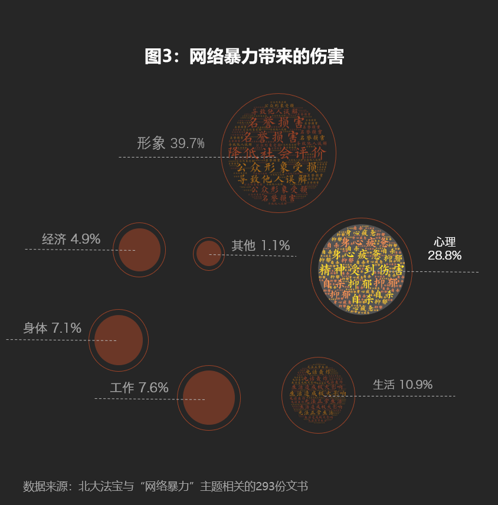
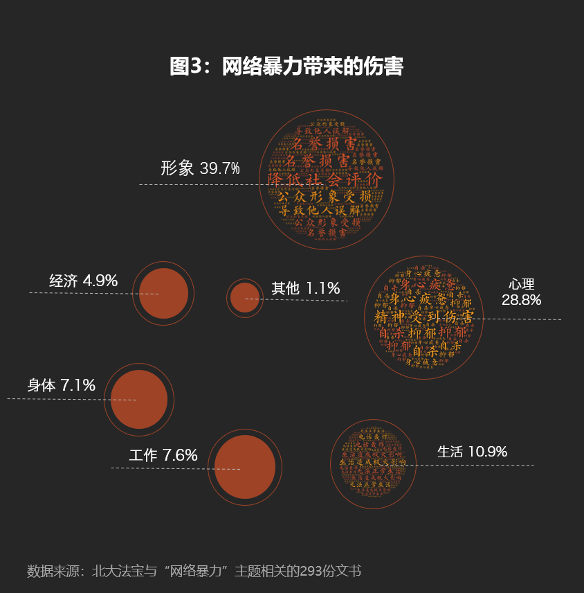
其中，对“形象”的损害占比最大，占39.7%。对形象带来的伤害主要来自“社会评价降低”、“名誉损害”。
对心理的影响是网络暴力带来的第二大伤害，占比28.8%。“精神受到伤害”、“身心疲惫”、”抑郁“是主要表现。
数据显示，网络暴力的受害者比未在现实生活中被骚扰的人更多出现严重的愤怒、焦虑、抑郁和失眠症状；他们中更多人产生过自杀的想法，接近三成，是未在现实生活被骚扰欺凌的受害者中有自杀想法比例的三倍。
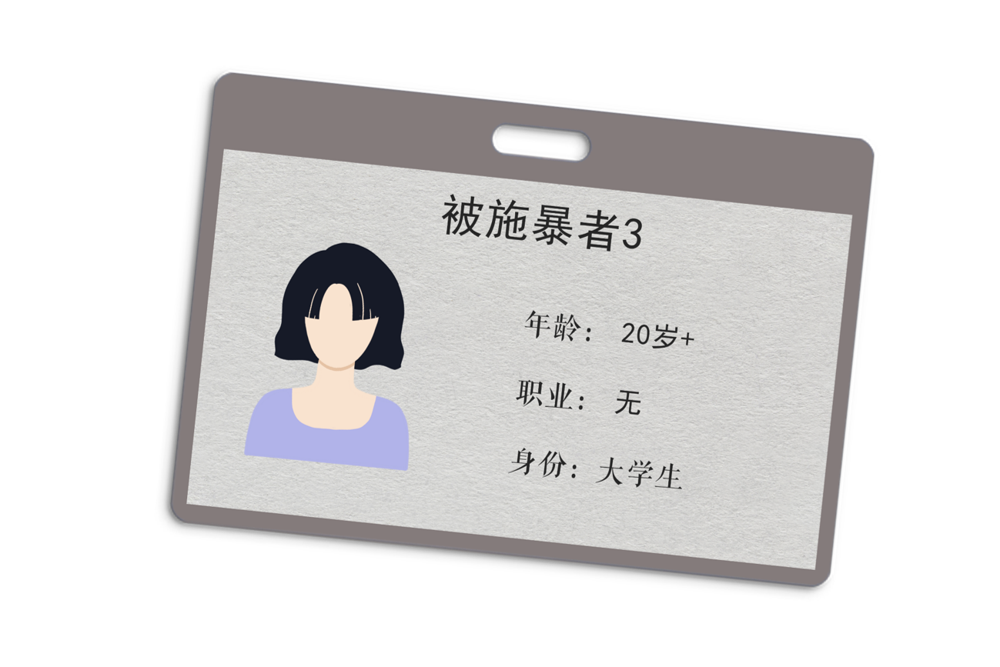
2017年5月底，因在淘宝上买卖迪奥喷雾粉底液一事发生矛盾，本来该矛盾在淘宝的介入后已得到圆满解决，但在买家煽动和唆使下其他网友在新浪微博上对小林进行人格侮辱。
小林先是以发送律师函进行警告，后公开在新浪微博发布律师维权声明，而且原告还将律师函特别＠相关网友。但他们依旧进行冷嘲热讽，更加肆无忌惮地对原告进行侮辱和谩骂。
在百般痛苦中，小林于多次在微博上进行举报，但新浪微博拒绝对相关侵权留言进行删除、屏蔽、断开链接处理。这些侮辱对小林的生活、学习带来非常不利影响，她每日必须服用抗抑郁药物舍曲林。
因难以承受社会上众多不明真相网友的误解和冷嘲热讽，小林于2017年5月31日在宿舍自杀。幸亏被同室学友及时发现并报警就医，这才避免悲剧发生。
2019年2月5日，联合国儿童基金会警告称，全球70.6%的15至24岁年轻网民正面临着网络暴力、欺凌和骚扰的威胁。中国青少年研究中心2021年开展的“青少年网络安全研究”调查数据显示，17.4%的青少年在上网过程中遭受过网络暴力。
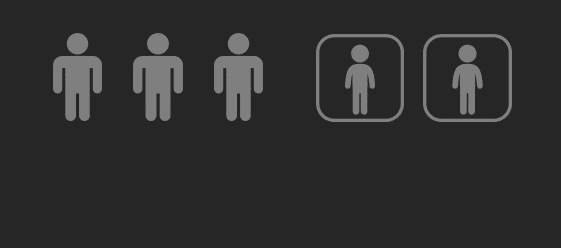
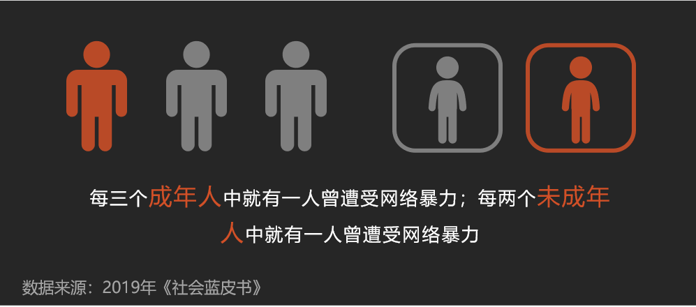
值得注意的是，新型网络暴力不断涌现。网络暴力已经演变成图文音视频全方位轰炸，甚至存在产业化的趋势。新型表现形式主要是图片&音频攻击、升级文字攻击（“大字报”、弹幕刷屏）、私信轰炸、反串（施暴者伪装成受害者或与受害者立场相同的人）、人肉搜索五种。
结合数起案例，人民网总结出这样的大致路径：爆料者挑起话题——“吃瓜群众”网络围观——“好事之徒”煽动舆论——网友“人肉搜索”——真相出现反转——爆料者遭遇舆论反噬——舆论泛化谩骂——社会撕裂加剧。
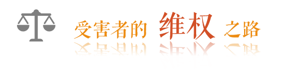
当发生网络暴力时，越来越多的人选择举起法律的武器。
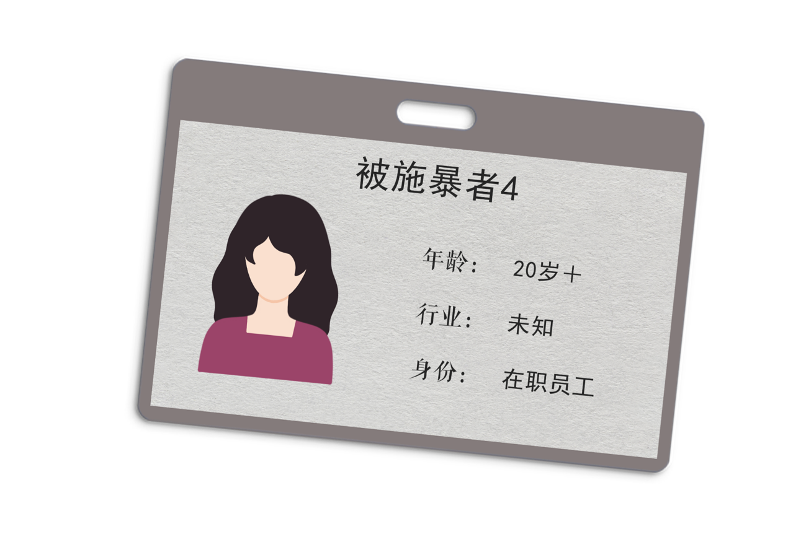
2020年7月7日，小吴（化名）下楼取快递时被便利店店主郎某偷拍了视频，编造“少妇出轨快递小哥”聊天内容，不断进行转发，谣言在互联网发酵。小吴也收到了大量询问以及谩骂的信息。
“一个国外的朋友看到了捏造的传播内容，把我臭骂了一通。”
2020年8月7日，消息传到了小吴所在的公司，同事都看到了。 小吴选择报警。
整理法律文书上的案件发现，从2008年到2020年，受害者因遭到网络暴力而提起诉讼的案件呈逐年上升的趋势。侧面反映出人们的法治意识和法治观念在不断与时俱进，网络不是法外之地。
被告人郎某在法庭上表示想跟吴女士致歉，吴女士表示，道歉是对方的权利，但她拒绝接受。 “案件到现在快十月了，如果有诚意的道歉，那来得太晚了。”
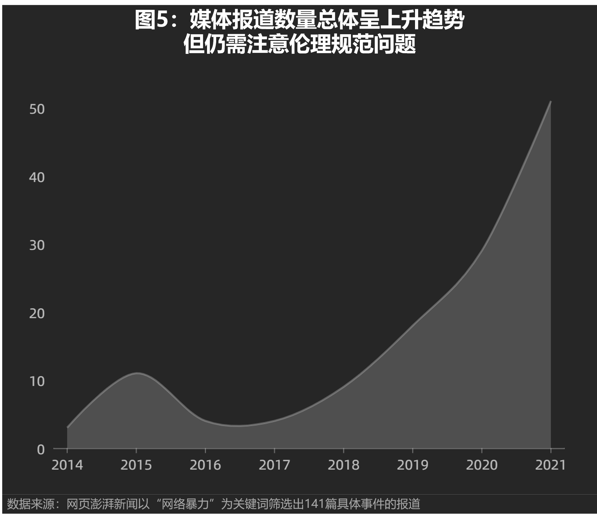
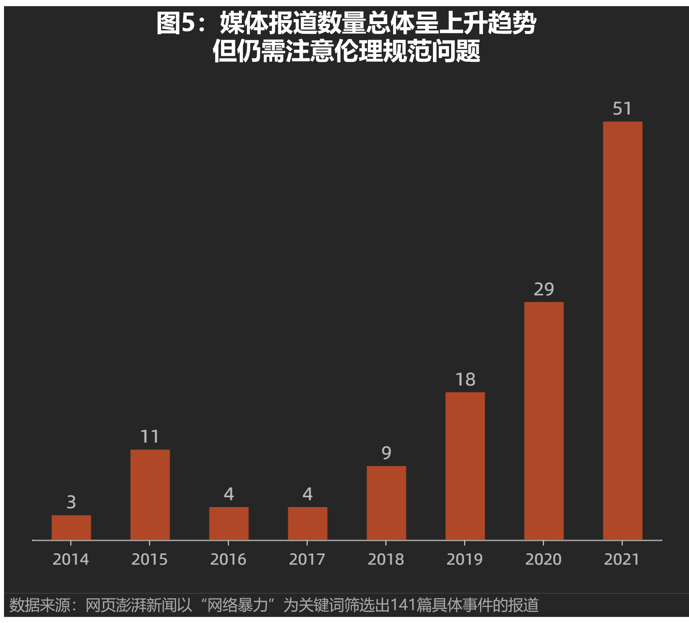
媒体关于网络暴力的报道数量从2014年到2021年呈现逐年增长的趋势，并在2021年达到了峰值。
媒体报道数量的增多，一方面让更多人了解到网络暴力这一社会议题；另一方面，对网暴的抵制与治理不断得到完善。2022全国两会期间，#建议加大网络暴力处罚力度#、#建议将严重的网络暴力纳入公诉案件#等多个话题登上了微博热搜。
值得注意的是，媒体带来关注的同时，也面临着诸如媒介审判等伦理失范的问题。2022年初的刘学州事件既是网络暴力的负面案例，也是新闻媒体伦理失范的体现。
在刘学州事件中，其最初在网上发布寻亲视频，逐渐得到了主流媒体的关注，但主流媒体未对事件双方进行全面的采访，仅仅呈现一方当事人（刘学州生母）的声音，令事件真相倾斜。主流媒体既可以给网络事件起到背书作用，也可能成为“键盘侠”借题发挥的着力点。
“本来考虑到哥哥和弟弟妹妹们无辜，我已经决定放弃诉讼，当我看到他们颠倒黑白是非，挑字眼来诬陷我的时候，我就下定决心要去起诉了。”（刘学州）
数据来源：北大法宝与“网络暴力”主题相关的293份文书
在我们搜集的的293篇与“网络暴力”相关的法律文书中《中华人民共和国侵权责任法》引用次数最多，高达691次，第十五条被引用了183次；次之则是
《最高人民法院关于审理利用信息网络侵害人身权益民事纠纷案件适用法律若干问题的规定》，引用次数为284次，第十八条被引用118次；引用量排名第三的是
《中华人民共和国民法总则》，为183次，其中第一百一十条被引用102次。
由于部分案件涉及被告的职业和身份属性，法院还援引了中华人民共和国教师法(2009修正)、中华人民共和国著作权法(2010修正)和中华人民共和国慈善法等较为特殊的法律进行审判。
2020年8月13日，杭州市公安局根据 《治安管理处罚法》第四十二条之规定，已对郎某、何某诽谤他人行为分别作出行政拘留处罚。
12月10日，谷女士通过微博发声，称事发后自己被诊断为抑郁状态，处理此事牵扯精力和时间，已被公司劝退，工作面试也接连失败，已“社会性死亡”，而造谣者只被行拘9天，已回归正常生活。她表示，已于10月下旬向法院提起刑事自诉。
检察机关起诉认定，被告郎某、何某捏造事实诽谤他人，行为已触犯《中华人民共和国刑法》第二百四十六条第一款、第二款的规定，依法应以公诉程序追究其诽谤罪的刑事责任。
经检察机关提起公诉，法院判决二被告人有期徒刑一年，缓刑二年。
韩国《电子通讯基本法》规定，以危害公共利益为目的，利用电子通讯设备公然散播虚假信息的人，将被处以5年以下有期徒刑，并缴纳5000万韩元（约29万人民币）以下罚款。韩国《刑法》规定在网上“用暴力恶意恐吓或毁损个人名誉”，可以“判处7年有期徒刑”。
相较于韩国处罚刑期长、罚款多的特点，我国对于网络暴力事后采取的措施并不算严厉。
此外，由于我国《刑法》规定的侮辱罪和诽谤罪通常不是公诉，需要由被害人提起刑事自诉，自诉人如无公权力介入存在举证困难、维权成本高等问题。
在自诉过程中，受害者不仅要收集施暴者在网络上发布的信息，在民事诉讼中还要先行起诉互联网平台获取施暴者账号主体信息，其中取证成本与诉讼成本都需要受害者承担。
我们从293份裁判文书中整理出176份详细描述维权费用的文书，对涉案金额进行一个初步的分析。其中金额为2000元以下占比24%，最少的金额为1元，6001元以上的占比52%，其中最高金额达30万元。
2020年全国居民人均可支配收入为80294元，平均月收入为6691元。超过50%的案件需要花费高收入人群支付约一个月的收入进行维权，此外还需要考虑时间成本。
小吴委托的律师提到，在实践过程中，有部分人会考虑咨询律师，选择民事侵权的救济途径；但还有 很多人考虑到侵权行为不严重、维权成本过高，往往选择放弃司法救济。很多受害者甚至不知道法院可以受理刑事自诉案件，往往自认倒霉。
2020年8月7日，吴女士得知被造谣选择报警，到12月14日余杭区人民法院立案受理，再到4月30日，取快递女子被造谣案一审宣判。 案件审理期限为131天。
从审理期限来看，网络暴力案件主要在181天以上即半年以上才能审理结束。从侧面反映出网络暴力案件的案情并不算简单。
北京大学法学院教授薛军认为，该类案件维权难主要有几方面的原因：一是主体难以确定，有时难以明确侵害人，需要平台协助；二是相关事实证据不固定，网络上的文字视频等有可能被删除；三是由于参与人数众多，大家都有法不责众的错觉，认为事后难以追责，于是容易在网络上抱着“不管做什么都没人知道是我”的心态，按键伤人。
在裁判结果中，法院判决结果多为立即停止侵权，并删除涉案内容多数，且要求被告在实施网络暴力的平台公开发布致歉声明，向原告赔礼道歉。其中要求被告在十日内向原告致歉的数量最多。
但是现实中，大多数的网络暴力案件中的施暴者仅仅只是赔偿精神抚慰金。
从法律文书整理的数据不难发现，赔偿金额在1元到20万元之间不等，精神抚慰费在5000到8000元的区间的占比是最大的，大部分是在5000-20000元之间。
其中我们发现在“原告王某与被告黄某名誉权、隐私权纠纷一审民事判决书”案件中，施暴者在与被施暴者的同个小区微信群中公布被施暴者及家人的微信昵称以及对应的真名、住址等个人信息，另发布了诸多侮辱性言辞，捏造事实暗示被施暴者与小区维修基金事件存在不明关系。但是裁判结果是让施暴者赔偿精神损害抚慰金1元。
学者认为，对于网络暴力的审判，传统的法律法规采取事后救济的方式，并不能完全适应网络领域的变化。互联网时代信息后续传播成本低，控制后续传播较为困难，事后救济的方式已不符合网络时代的信息传播规律。
我国目前现行治理网络暴力的法律法规条文并不少，但较为分散，探索专门法的立法模式，是未来有效治理网络暴力的重要途径。
中国人民大学法学院教授石佳友认为，民法典已经对网络暴力发生后的平台处置责任进行了详尽的规范，目前更复杂的环节是在事前预警，还没有相应的法律法规对平台提出具备操作性的要求。
在网暴受害者诉诸法律之前，平台监管应是他们应对侮辱、攻击性言论的第一防线。
· 平台加强监管
2022年3月3日，微博方发布消息，为减少及预防类似事件发生，平台将上线一键开启“防暴模式”。在这一模式下，用户无法接收未关注人的转发、评论和私信。如果用户收到大量非正常评论，系统将弹窗提示用户是否开启隐私防护。
中国社科院大学互联网法治研究中心执行主任刘晓春建议，除了对这类短期易被网暴群体的特殊防护外，还可以增强对未成年人等易受伤害群体的保护，开发针对性功能。
也有学者提出可以若在后台实名制之后增加一道测试程序则能够对网民起到震慑作用，也能充分发挥法律的警示作用。
· 政府开展治理
4月24日，中央网信办发布消息，将部署开展网络暴力专项治理行动，聚焦网络暴力易发多发、社会影响力大的18家网站平台，通过建立完善监测识别、实时保护、干预处置、溯源追责、宣传曝光等措施，对平台进行全链条治理。
6月27日，国家互联网信息办公室发布《互联网用户账号信息管理规定》，规定于8月1日正式施行，对专业账号必须“明示资格”、IP地址全面公示、违规账号严禁重新注册、仿冒账号不予注册、账号信用完全留底、公众账号信息公开进行了详细的规定。
· 自我保护
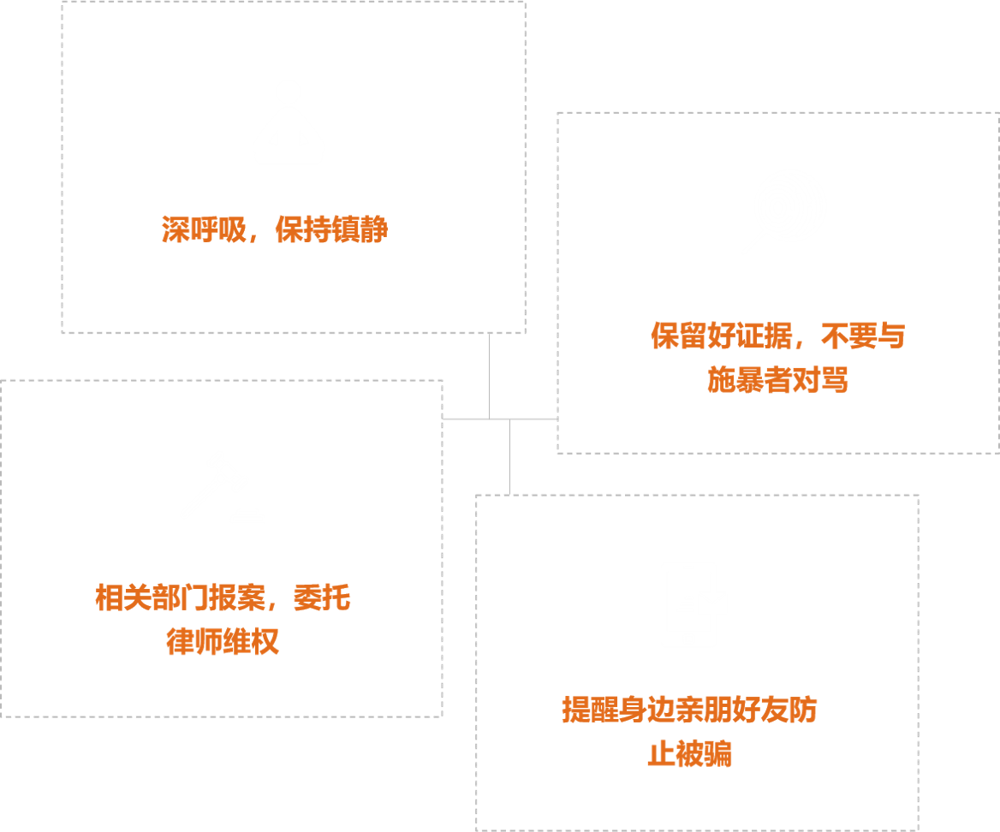
当面对网络暴力，我们应该怎么做？
我们在保护自己的时候也要时刻谨记，“健康绿色上网，共建和谐网络”。
.gif)